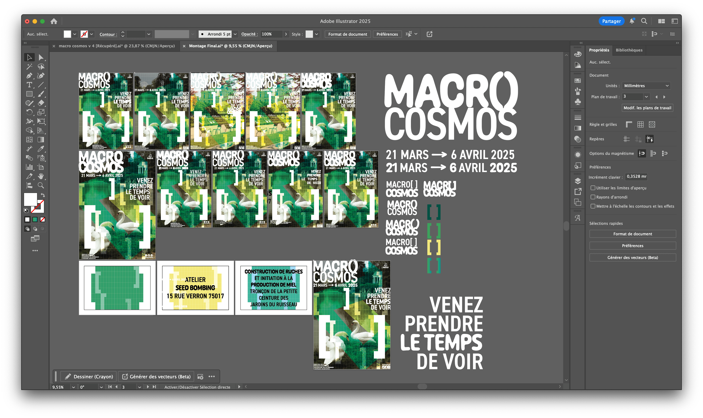
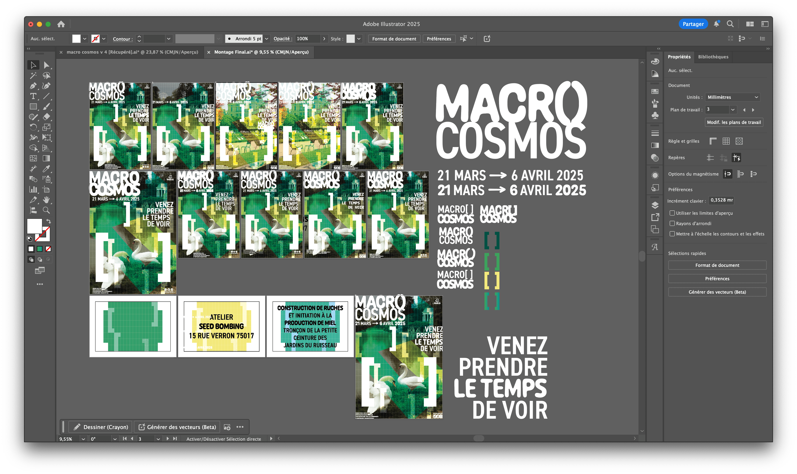

➔ Macrocosmos
➔ Macrocosmos is a fictional project imagined for the City of Paris to raise awareness and bring people together around the importance of urban biodiversity. The goal was to position the event as a key reference for promoting and protecting biodiversity within the city.
The challenge was to deliver a message of discovery, collective action, and coexistence between urban life and nature. The tone of the project balanced pedagogy, poetry, and a strong sense of community.
I designed a flexible visual identity system adaptable to a wide range of formats and easy for organizers and partners to reuse.
My creative direction was built around the idea “Define to reveal, discuss, and protect.” It combined organic and linear typographic forms, supported by a strong grid and photographs I captured in the Buttes-Chaumont park. This visual language expresses the symbiosis between the urban landscape and natural life.
The use of the bracket as a core graphic symbol creates a protected space for dialogue and expression. Its typographic nature connects to writing and conversation, perfectly aligning with the project’s mission of awareness and collective engagement.
Roles: Art direction, visual identity design, editorial system design, photography, communication strategy.